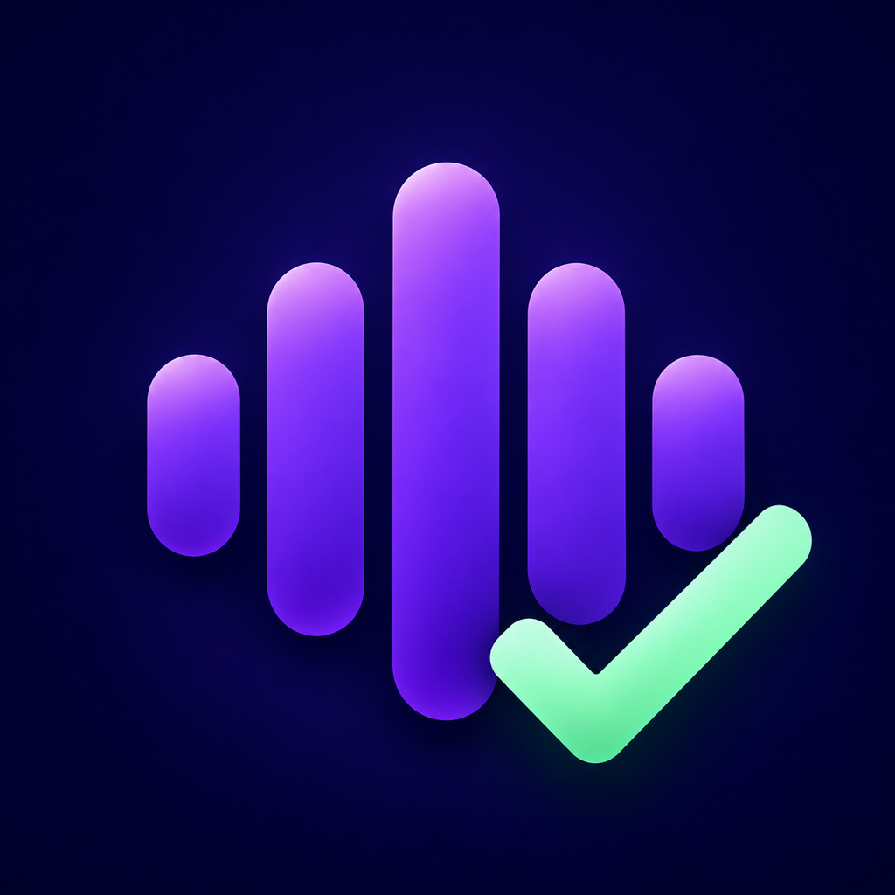

Check the details
Format, sample rate, channels, PCM bit depth, duration, sample peaks and clipping risk. Spoken slates and performance instructions stay under your review.

In development · Native verification underway
Compare your recording with the client’s brief. See the technical issues, confirm the human details and prepare a separate copy before sharing.
Format, sample rate, channels, PCM bit depth, duration, sample peaks and clipping risk. Spoken slates and performance instructions stay under your review.
Prepare a separate WAV or M4A copy with supported conversions and corrections. Every prepared export is analyzed again.
No mandatory account, ads or audio-processing server. Your recordings stay on your device until you choose to share.
Unlimited individual checks, playback, manual checklists, renaming copies and one custom template. Optional lifetime Pro adds batch workflows, projects, advanced tools and detailed reports.
Pro measures loudness and true peak for mono/stereo recordings using libebur128. Short recordings may not support every metric. Quiet-window estimates are not isolated noise-floor measurements. Technical checks do not judge acting quality or guarantee submission acceptance.
Preview supported corrections with Fix to Brief, compare original and prepared audio, create reusable filename recipes and deliver audio, PDF reports and notes in one ZIP. Pro adds waveform problem markers and libebur128 loudness and true-peak analysis. Originals remain unchanged.
WAV export supports 44.1, 48 and 96 kHz; M4A supports 44.1 and 48 kHz. Quiet-window and silence markers are estimates. Sample-peak normalization is not true-peak limiting. No subscription: Pro is an optional lifetime purchase with localized App Store pricing.